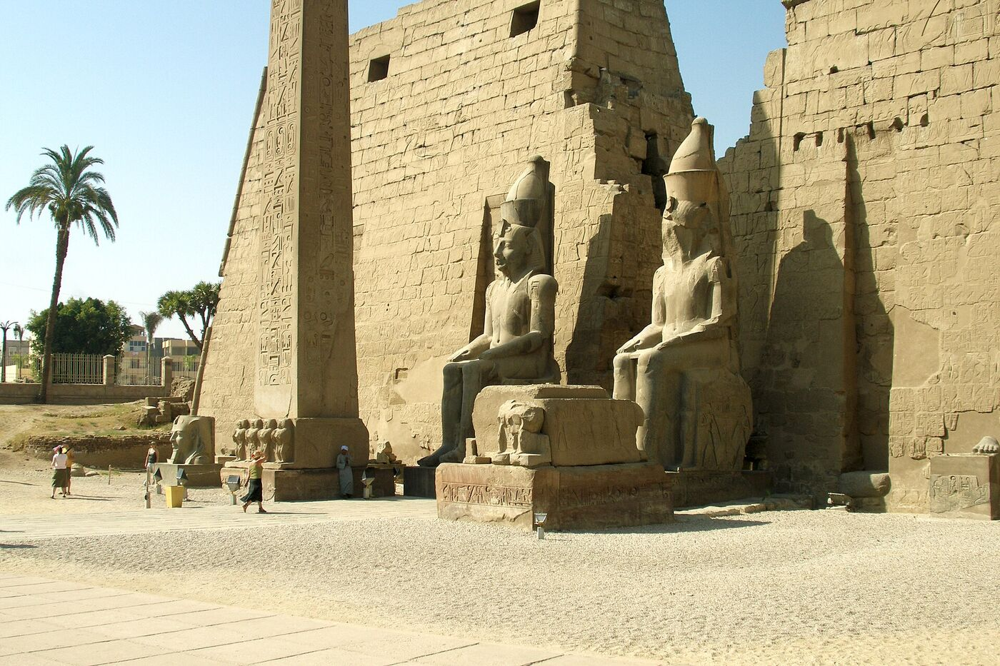

معبد الأقصر
معبد على الضفة الشرقية للنيل في قلب المدينة. أقيم معظمه في عهد أمنحتب الثالث ورمسيس الثاني، ويظهر عند مدخله الصرح وتمثالان ضخمان لرمسيس الثاني ومسلة.
مدينة على ضفاف النيل بها بعض أكبر المعابد في مصر القديمة.

معبد على الضفة الشرقية للنيل في قلب المدينة. أقيم معظمه في عهد أمنحتب الثالث ورمسيس الثاني، ويظهر عند مدخله الصرح وتمثالان ضخمان لرمسيس الثاني ومسلة.

من أكبر المجمعات الدينية في مصر القديمة، وكان مخصصا في الأساس للإله آمون. تشتهر قاعة الأعمدة الكبرى فيه بعدد كبير من الأعمدة الضخمة.